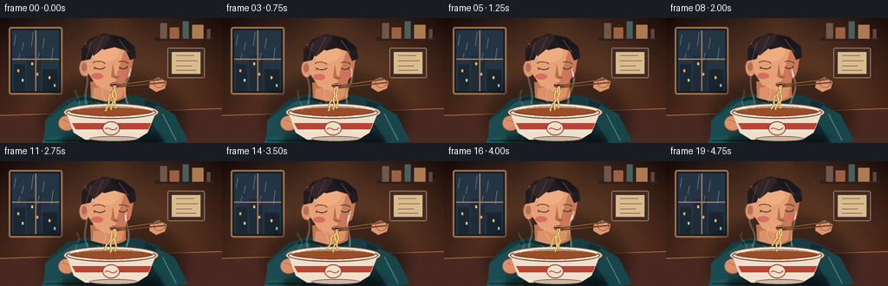
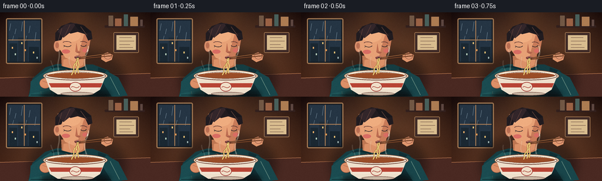
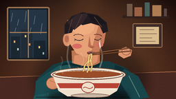

CODING AGENTS AS PIXEL WORLD MODELS
traex/GPT-5.6-Sol · motion_rationality_0000
点击播放 · 原生 RGB 像素
逐轮保存的候选
回放视频、检查图与代码变化。
每份候选均可单独播放。实际图片检查记录在下方工具轨迹中。
候选 01播放与检查图
点击播放 · 原生 RGB 像素


展开代码变化
--- 上一保存版本
+++ 本次保存版本
@@ -0,0 +1,274 @@
+from pathlib import Path
+import math
+import numpy as np
+from PIL import Image, ImageDraw, ImageFilter
+import artifact_io
+
+# Warm, cinematic hand-drawn animation, rendered oversize for clean antialiasing.
+W, H, N, SCALE = 256, 144, 20, 4
+rng = np.random.default_rng(2407)
+
+def sc(v):
+ if isinstance(v, (tuple, list)):
+ return tuple(int(round(x*SCALE)) for x in v)
+ return int(round(v*SCALE))
+
+def rgba(hexv, a=255):
+ if isinstance(hexv, tuple): return (*hexv[:3], a)
+ hexv = hexv.lstrip('#')
+ return tuple(int(hexv[i:i+2], 16) for i in (0,2,4)) + (a,)
+
+def ellipse(d, box, fill, outline=None, width=1):
+ d.ellipse(sc(box), fill=fill, outline=outline, width=sc(width) if outline else 1)
+
+def line(d, pts, fill, width=1, joint='curve'):
+ d.line([sc(p) for p in pts], fill=fill, width=max(1,sc(width)), joint=joint)
+
+def polygon(d, pts, fill): d.polygon([sc(p) for p in pts], fill=fill)
+
+def bezier_points(p0,p1,p2,p3,steps=30):
+ out=[]
+ for u in np.linspace(0,1,steps):
+ q=(1-u)**3*np.array(p0)+3*(1-u)**2*u*np.array(p1)+3*(1-u)*u*u*np.array(p2)+u**3*np.array(p3)
+ out.append(tuple(q))
+ return out
+
+def glow(base, xy, radius, color, alpha):
+ lay=Image.new('RGBA',base.size,(0,0,0,0)); ld=ImageDraw.Draw(lay)
+ x,y=xy; ld.ellipse(sc((x-radius,y-radius,x+radius,y+radius)),fill=(*color,alpha))
+ lay=lay.filter(ImageFilter.GaussianBlur(sc(radius*.65)))
+ base.alpha_composite(lay)
+
+def make_background():
+ # Fine warm wall gradient with dark vignette.
+ yy,xx=np.mgrid[0:H*SCALE,0:W*SCALE]
+ xn=xx/(W*SCALE-1); yn=yy/(H*SCALE-1)
+ top=np.array([41,29,29.]); bot=np.array([93,57,41.])
+ arr=top[None,None,:]*(1-yn[:,:,None])+bot[None,None,:]*yn[:,:,None]
+ warm=np.exp(-(((xn-.56)/.46)**2+((yn-.37)/.72)**2))[...,None]*np.array([34,18,4])[None,None,:]
+ vig=np.clip(((xn-.5)**2/.35+(yn-.48)**2/.65),0,1)[...,None]*np.array([25,22,20])[None,None,:]
+ arr=np.clip(arr+warm-vig,0,255).astype(np.uint8)
+ im=Image.fromarray(arr,'RGB').convert('RGBA')
+ d=ImageDraw.Draw(im)
+ # Window and softly lit rainy evening outside.
+ d.rounded_rectangle(sc((10,10,72,88)),radius=sc(3),fill=rgba('#171d25'),outline=rgba('#9d7450'),width=sc(2))
+ d.rectangle(sc((14,14,68,84)),fill=rgba('#253544'))
+ # city blocks
+ d.rectangle(sc((16,53,29,84)),fill=rgba('#1b2832')); d.rectangle(sc((31,43,47,84)),fill=rgba('#202c37'))
+ d.rectangle(sc((49,59,66,84)),fill=rgba('#192630'))
+ for x,y,c in [(20,59,'#edb06a'),(25,70,'#b9d1bd'),(36,51,'#e9c47a'),(42,63,'#e79b54'),(56,67,'#f0c677'),(62,76,'#b8cfcb')]:
+ d.rectangle(sc((x,y,x+2,y+3)),fill=rgba(c,190))
+ # rain streaks
+ for x,y,l in [(18,19,12),(27,28,9),(38,16,16),(51,23,12),(61,34,15),(23,40,8),(45,40,9)]:
+ line(d,[(x,y),(x-2,y+l)],rgba('#8ea6b4',100),.55)
+ line(d,[(41,14),(41,84)],rgba('#a77b55'),1.4); line(d,[(14,47),(68,47)],rgba('#a77b55'),1.4)
+ # shelf on right
+ d.rounded_rectangle(sc((178,22,246,26)),radius=sc(1),fill=rgba('#33201d'))
+ for x,wid,h,c in [(184,9,20,'#725845'),(195,12,15,'#9a6245'),(210,8,22,'#49605b'),(221,14,18,'#ad7c52'),(238,5,13,'#5e4740')]:
+ d.rounded_rectangle(sc((x,25-h,x+wid,24)),radius=sc(1),fill=rgba(c),outline=rgba('#25191a'),width=sc(.6))
+ # framed menu suggestion, no legible text
+ d.rounded_rectangle(sc((193,34,236,69)),radius=sc(2),fill=rgba('#402b27'),outline=rgba('#ad8056'),width=sc(1))
+ d.rectangle(sc((198,39,231,64)),fill=rgba('#d9bd8f'))
+ for y,wid in [(43,21),(49,25),(55,18),(60,23)]:
+ line(d,[(203,y),(203+wid,y)],rgba('#77594a',155),.7)
+ # counter plane and its edge
+ polygon(d,[(0,111),(256,103),(256,144),(0,144)],rgba('#4a2922'))
+ line(d,[(0,112),(256,104)],rgba('#bd7a4c',150),1)
+ return im
+
+BG=make_background()
+
+def steam_curve(d, x, y, phase, height, side=1, alpha=110, width=1.2):
+ # rising S curves, displaced laterally as time advances
+ pts=[]
+ for k in np.linspace(0,1,34):
+ py=y-height*k
+ px=x+side*(2.1*math.sin(k*math.pi*2+phase)+2.8*k)+.7*math.sin(phase*.6+k*8)
+ pts.append((px,py))
+ # tapered visual achieved with soft under-stroke + bright core
+ line(d,pts,rgba('#f6e7cf',alpha//3),width+2)
+ line(d,pts,rgba('#fff3dc',alpha),width)
+
+def noodle_curve(x0,y0,x1,y1,phase,amp=1.5,steps=35):
+ pts=[]
+ for k in np.linspace(0,1,steps):
+ x=x0+(x1-x0)*k + amp*math.sin(phase + k*math.pi*3.2)*(math.sin(math.pi*k)**.7)
+ y=y0+(y1-y0)*k
+ pts.append((x,y))
+ return pts
+
+def render(i):
+ t=i/(N-1)
+ cyc=math.sin(2*math.pi*(i/9.5))
+ breathe=math.sin(2*math.pi*(i/19))
+ # tiny intentional slurp bob: forward/down, then release
+ bob=1.15*(.5+.5*math.sin(2*math.pi*(i-1)/9.5))
+ im=BG.copy()
+ # changing ambient lamp bloom
+ glow(im,(128,12),30,(234,142,67),35)
+ d=ImageDraw.Draw(im,'RGBA')
+
+ # Cast shadow behind figure.
+ shadow=Image.new('RGBA',im.size,(0,0,0,0)); sd=ImageDraw.Draw(shadow)
+ ellipse(sd,(50,61,213,171),(13,10,12,120)); shadow=shadow.filter(ImageFilter.GaussianBlur(sc(8)))
+ im.alpha_composite(shadow); d=ImageDraw.Draw(im,'RGBA')
+
+ # Body and sweater, shoulders stationary apart from breathing.
+ polygon(d,[(48,145),(55,113),(77,94),(97,88+breathe*.4),(158,89),(184,99),(208,145)],rgba('#163d42'))
+ polygon(d,[(48,145),(61,112),(86,95),(102,92),(91,145)],rgba('#1f5558'))
+ polygon(d,[(167,94),(186,101),(208,145),(164,145)],rgba('#102f35'))
+ # knit folds and edge light
+ for pts in [[(66,111),(70,140)],[(82,103),(88,139)],[(181,108),(187,139)],[(197,125),(201,143)]]:
+ line(d,pts,rgba('#5d8980',70),1)
+ line(d,[(52,141),(205,141)],rgba('#0c292e',120),1)
+
+ # Neck behind the face.
+ polygon(d,[(104,73+bob),(105,94),(124,103),(145,91),(145,69+bob)],rgba('#be7652'))
+ polygon(d,[(108,80+bob),(107,93),(125,99),(141,90),(143,76+bob)],rgba('#dc9168'))
+ # collar
+ line(d,bezier_points((88,95),(105,85),(121,108),(147,92)),rgba('#0e2d32'),3.5)
+
+ # Ear then face, leaning toward bowl.
+ ellipse(d,(91,47+bob,104,67+bob),rgba('#dc936c'),rgba('#7d493c'),.7)
+ ellipse(d,(94,51+bob,100,61+bob),rgba('#b96f53'),None)
+ # face silhouette, fuller forehead and tapered chin
+ polygon(d,[(98,29+bob),(113,21+bob),(139,24+bob),(155,38+bob),(151,61+bob),(140,78+bob),(130,85+bob),(111,77+bob),(101,62+bob)],rgba('#e7a176'))
+ # facial warm side shade
+ polygon(d,[(145,31+bob),(155,39+bob),(151,62+bob),(140,78+bob),(131,83+bob),(136,61+bob)],rgba('#c87b59',190))
+ ellipse(d,(104,28+bob,137,50+bob),rgba('#efad80',90))
+ # nose angled down toward noodles
+ polygon(d,[(130,52+bob),(132,65+bob),(138,67+bob),(134,70+bob),(128,67+bob)],rgba('#bd6d51'))
+ line(d,[(130,68+bob),(136,68+bob)],rgba('#8d4d41',120),.7)
+
+ # Hair cap and strands.
+ polygon(d,[(94,49+bob),(94,35+bob),(104,23+bob),(120,17+bob),(141,21+bob),(155,32+bob),(157,45+bob),(150,48+bob),(145,37+bob),(132,33+bob),(120,36+bob),(111,31+bob),(104,47+bob)],rgba('#221c20'))
+ polygon(d,[(98,32+bob),(112,20+bob),(130,18+bob),(119,34+bob),(108,43+bob)],rgba('#33262a'))
+ polygon(d,[(126,19+bob),(144,23+bob),(155,34+bob),(145,35+bob),(133,29+bob)],rgba('#19171b'))
+ for pts in [[(105,27+bob),(99,48+bob)],[(119,21+bob),(109,42+bob)],[(137,24+bob),(148,39+bob)]]:
+ line(d,pts,rgba('#65443a',120),.8)
+
+ # Downcast eyes and brows.
+ line(d,bezier_points((107,51+bob),(112,48+bob),(118,49+bob),(121,52+bob),14),rgba('#5d3734'),1)
+ line(d,bezier_points((137,50+bob),(141,48+bob),(146,50+bob),(148,52+bob),14),rgba('#563332'),1)
+ line(d,bezier_points((108,56+bob),(113,59+bob),(118,59+bob),(121,56+bob),14),rgba('#2a2427'),1.05)
+ line(d,bezier_points((137,56+bob),(141,59+bob),(145,58+bob),(147,55+bob),14),rgba('#2a2427'),1.05)
+ # tiny lashes
+ line(d,[(110,57+bob),(108,59+bob)],rgba('#2a2427'),.6); line(d,[(145,57+bob),(147,58+bob)],rgba('#2a2427'),.6)
+ # cheek flush
+ ellipse(d,(105,63+bob,119,70+bob),rgba('#d96d63',35)); ellipse(d,(140,61+bob,150,68+bob),rgba('#d96d63',32))
+
+ # Mouth purses and changes subtly during slurp.
+ mouth_y=76+bob
+ ellipse(d,(126.5,mouth_y-2.2,137.5,mouth_y+3.2),rgba('#773c3b'))
+ opening=1.6+1.0*(.5+.5*cyc)
+ ellipse(d,(130,mouth_y-.4,135,mouth_y+opening),rgba('#2d2024'))
+ line(d,[(128,mouth_y-1),(136,mouth_y-1)],rgba('#f0a18a',180),.75)
+
+ # Left arm and hand bracing bowl.
+ polygon(d,[(70,105),(52,118),(51,139),(82,132),(91,116)],rgba('#1b4c51'))
+ ellipse(d,(67,112,87,130),rgba('#dc9068'),rgba('#8c513e'),.7)
+ line(d,[(72,117),(83,121)],rgba('#a45f49',130),.7)
+
+ # Right sleeve comes forward to chopstick hand.
+ polygon(d,[(181,100),(201,111),(217,142),(191,145),(170,112)],rgba('#19464b'))
+ line(d,[(187,110),(203,141)],rgba('#60867c',70),1)
+ # hand at chopsticks
+ polygon(d,[(173,72),(183,68),(192,73),(190,81),(180,85),(172,80)],rgba('#df966d'))
+ ellipse(d,(177,69,190,80),rgba('#e5a079'),rgba('#8e5241'),.65)
+ for k in range(3):
+ line(d,[(180,72+k*2.1),(190,75+k*1.4)],rgba('#a55e49',100),.55)
+
+ # steam behind chopsticks and bowl; phase causes physically upward drift.
+ steam_layer=Image.new('RGBA',im.size,(0,0,0,0)); st=ImageDraw.Draw(steam_layer,'RGBA')
+ steam_curve(st,101,105,(i*.43),42,-1,95,1.05)
+ steam_curve(st,145,106,(i*.37+1.7),49,1,115,1.25)
+ steam_curve(st,121,105,(i*.34+3.2),30,-1,72,.85)
+ steam_layer=steam_layer.filter(ImageFilter.GaussianBlur(sc(.45)))
+ im.alpha_composite(steam_layer); d=ImageDraw.Draw(im,'RGBA')
+
+ # Chopsticks, held steadily to the lips; tips slightly bob with the head.
+ tip1=(133.2,mouth_y+1); tip2=(134.4,mouth_y+3)
+ line(d,[tip1,(187,70)],rgba('#4a281d'),2.0)
+ line(d,[tip2,(191,74)],rgba('#5b3120'),1.8)
+ line(d,[tip1,(187,70)],rgba('#d3914f',180),.65)
+ line(d,[tip2,(191,74)],rgba('#c47c3d',170),.55)
+
+ # Bowl shadow on the wood.
+ shadow2=Image.new('RGBA',im.size,(0,0,0,0)); s2=ImageDraw.Draw(shadow2)
+ ellipse(s2,(69,129,188,151),(9,6,7,150)); shadow2=shadow2.filter(ImageFilter.GaussianBlur(sc(4)))
+ im.alpha_composite(shadow2); d=ImageDraw.Draw(im,'RGBA')
+
+ # Bowl and visible soup. Rear rim first.
+ ellipse(d,(73,98,183,119),rgba('#ead7b8'),rgba('#6b4238'),1)
+ ellipse(d,(77,100,179,115),rgba('#7b3d24'),rgba('#f7e7cf'),1.3)
+ ellipse(d,(82,103,174,113),rgba('#a75a2d'))
+ # toppings in soup: egg, greens, scallions, noodles
+ ellipse(d,(91,102,108,111),rgba('#f1dfb1')); ellipse(d,(96,103,105,110),rgba('#e9a93f'))
+ polygon(d,[(150,102),(166,103),(160,110),(148,108)],rgba('#325a39'))
+ for x,y in [(115,106),(125,104),(141,108),(158,105)]:
+ ellipse(d,(x-1.5,y-1,x+1.5,y+1),rgba('#92bb63'))
+ for off in range(5):
+ pts=[(108+off*8,108),(114+off*6,104),(122+off*5,110),(132+off*4,105)]
+ line(d,pts,rgba('#e6bd66'),1.15)
+
+ # Bowl body overlays soup lower half.
+ polygon(d,[(76,108),(180,108),(170,132),(157,140),(98,140),(85,132)],rgba('#efe0cc'))
+ ellipse(d,(76,101,180,116),rgba('#f4e8d6',70),rgba('#6d443a'),1.15)
+ # Repaint soup opening within rim after translucent lip
+ ellipse(d,(80,103,176,112.5),rgba('#9a4d28',210))
+ # bowl red band and emblem
+ polygon(d,[(83,121),(174,121),(171,128),(87,128)],rgba('#b84435'))
+ line(d,[(88,130),(168,130)],rgba('#f9eee0',150),1)
+ ellipse(d,(118,119,138,135),rgba('#f0dfc9'),rgba('#9f342e'),1.1)
+ # simple decorative wave motif
+ line(d,bezier_points((121,128),(125,123),(129,133),(135,126),18),rgba('#aa3d34'),1.1)
+ ellipse(d,(103,136,159,142),rgba('#c9b7a4'),rgba('#704840'),.7)
+ # rim highlight
+ line(d,bezier_points((81,106),(102,99),(153,99),(176,106),30),rgba('#fff5e5',210),1.25)
+
+ # Noodles in FRONT of bowl/soup and linked to lips. Their waves travel upward.
+ # Continuous main strand communicates active feeding; companions are gradually consumed.
+ y0=mouth_y+1.5
+ phase=-i*.88
+ strands=[(-2.1,107.0,1.35),(0.6,105.5,1.6),(3.0,104.0,1.15)]
+ for j,(xo,base_end,amp) in enumerate(strands):
+ # two side strands retract late, center remains feeding from bowl
+ retract=max(0,t-(.28+j*.18))*(13 if j!=1 else 3)
+ yend=base_end-retract
+ xstart=132+xo*.25
+ xend=126+xo*2.1 + 1.0*math.sin(i*.45+j)
+ pts=noodle_curve(xstart,y0,xend,yend,phase+j*1.7,amp)
+ line(d,pts,rgba('#8b5728',130),2.35)
+ line(d,pts,rgba('#f2cf70'),1.45)
+ line(d,[(p[0]-.25,p[1]) for p in pts],rgba('#fff0a4',150),.38)
+ # tiny upward droplets/soup glints along moving noodle
+ for j in range(2):
+ k=((i*.14+j*.47)%1)
+ y=y0+(104-y0)*k
+ x=131+math.sin(phase+k*9)*1.4
+ ellipse(d,(x-.45,y-.8,x+.45,y+.8),rgba('#fff0a2',170))
+
+ # Bowl edge and fingers restored to ensure depth cues.
+ line(d,bezier_points((78,107),(101,115),(154,115),(178,107),30),rgba('#6e4035',170),.8)
+ # Steam wisps in front of bowl, light and subtle.
+ front=Image.new('RGBA',im.size,(0,0,0,0)); fd=ImageDraw.Draw(front,'RGBA')
+ steam_curve(fd,91,107,i*.35+2.2,25,-1,50,.75)
+ front=front.filter(ImageFilter.GaussianBlur(sc(.35))); im.alpha_composite(front)
+
+ # Downsample, gentle cinematic grading and deterministic fine grain.
+ rgb=im.convert('RGB').resize((W,H),Image.Resampling.LANCZOS)
+ arr=np.asarray(rgb).astype(np.int16)
+ # subtle fixed film grain (kept tiny to preserve coherent motion)
+ local=np.random.default_rng(9000+i)
+ grain=local.normal(0,0.9,(H,W,1))
+ arr=np.clip(arr+grain,0,255).astype(np.uint8)
+ return arr
+
+def main():
+ frames=np.stack([render(i) for i in range(N)],axis=0).astype(np.uint8)
+ artifact_io.save(frames, Path(__file__).resolve().parent)
+ # Optional compact preview for local visual QA.
+ Image.fromarray(frames[0]).save(Path(__file__).resolve().parent/'preview_first.png')
+
+if __name__=='__main__':
+ main()
候选 02播放与检查图
点击播放 · 原生 RGB 像素
展开代码变化
--- 上一保存版本
+++ 本次保存版本
@@ -169,9 +169,11 @@
ellipse(d,(67,112,87,130),rgba('#dc9068'),rgba('#8c513e'),.7)
line(d,[(72,117),(83,121)],rgba('#a45f49',130),.7)
- # Right sleeve comes forward to chopstick hand.
- polygon(d,[(181,100),(201,111),(217,142),(191,145),(170,112)],rgba('#19464b'))
- line(d,[(187,110),(203,141)],rgba('#60867c',70),1)
+ # Right sleeve bends upward to the chopstick hand (clear shoulder-elbow-wrist chain).
+ polygon(d,[(169,95),(185,98),(194,113),(211,142),(189,145),(172,116)],rgba('#19464b'))
+ polygon(d,[(169,96),(181,91),(178,80),(190,78),(194,101),(184,113),(172,108)],rgba('#1b4b50'))
+ line(d,[(174,99),(184,108),(193,137)],rgba('#60867c',70),1)
+ line(d,[(180,91),(188,99)],rgba('#0e3035',110),1)
# hand at chopsticks
polygon(d,[(173,72),(183,68),(192,73),(190,81),(180,85),(172,80)],rgba('#df966d'))
ellipse(d,(177,69,190,80),rgba('#e5a079'),rgba('#8e5241'),.65)
@@ -259,7 +261,8 @@
rgb=im.convert('RGB').resize((W,H),Image.Resampling.LANCZOS)
arr=np.asarray(rgb).astype(np.int16)
# subtle fixed film grain (kept tiny to preserve coherent motion)
- local=np.random.default_rng(9000+i)
+ # Fixed grain gives texture without flickering between frames.
+ local=np.random.default_rng(9000)
grain=local.normal(0,0.9,(H,W,1))
arr=np.clip(arr+grain,0,255).astype(np.uint8)
return arr
可观测工具轨迹
实际执行的命令与返回图片。
命令 1exit 0
/bin/bash -lc "cat prompt.txt && printf '\\n---RULES---\\n' && cat GENERATION_RULES.md && printf '\\n---SPEC---\\n' && cat task_spec.json"
命令 2exit 1
/bin/bash -lc "find . -maxdepth 2 -type f -printf '%p\\n' | sort && printf '\\nTOOLS\\n' && command -v ffmpeg && command -v python3 && python3 - <<'PY' mods=['cv2','PIL','numpy','imageio','moviepy','cairo'] for m in mods: try: x=__import__(m); print(m,'ok',getattr(x,'__version__','')) except Exception as e: print(m,'NO',e) PY"
命令 3exit 0
/bin/bash -lc "python3 - <<'PY' mods=['cv2','PIL','numpy','imageio','moviepy','cairo'] for m in mods: try: x=__import__(m); print(m,'ok',getattr(x,'__version__','')) except Exception as e: print(m,'NO',repr(e)) PY cat artifact_io.py"
命令 4exit 1
/bin/bash -lc "cat > generate.py <<'PY'
from pathlib import Path
import math
import numpy as np
from PIL import Image, ImageDraw, ImageFilter
import artifact_io
# Warm, cinematic hand-drawn animation, rendered oversize for clean antialiasing.
W, H, N, SCALE = 256, 144, 20, 4
rng = np.random.default_rng(2407)
def sc(v):
if isinstance(v, (tuple, list)):
return tuple(int(round(x*SCALE)) for x in v)
return int(round(v*SCALE))
def rgba(hexv, a=255):
if isinstance(hexv, tuple): return (*hexv[:3], a)
hexv = hexv.lstrip('#')
return tuple(int(hexv[i:i+2], 16) for i in (0,2,4)) + (a,)
def ellipse(d, box, fill, outline=None, width=1):
d.ellipse(sc(box), fill=fill, outline=outline, width=sc(width) if outline else 1)
def line(d, pts, fill, width=1, joint='curve'):
d.line([sc(p) for p in pts], fill=fill, width=max(1,sc(width)), joint=joint)
def polygon(d, pts, fill): d.polygon([sc(p) for p in pts], fill=fill)
def bezier_points(p0,p1,p2,p3,steps=30):
out=[]
for u in np.linspace(0,1,steps):
q=(1-u)**3*np.array(p0)+3*(1-u)**2*u*np.array(p1)+3*(1-u)*u*u*np.array(p2)+u**3*np.array(p3)
out.append(tuple(q))
return out
def glow(base, xy, radius, color, alpha):
lay=Image.new('RGBA',base.size,(0,0,0,0)); ld=ImageDraw.Draw(lay)
x,y=xy; ld.ellipse(sc((x-radius,y-radius,x+radius,y+radius)),fill=(*color,alpha))
lay=lay.filter(ImageFilter.GaussianBlur(sc(radius*.65)))
base.alpha_composite(lay)
def make_background():
# Fine warm wall gradient with dark vignette.
yy,xx=np.mgrid[0:H*SCALE,0:W*SCALE]
xn=xx/(W*SCALE-1); yn=yy/(H*SCALE-1)
top=np.array([41,29,29.]); bot=np.array([93,57,41.])
arr=top[None,None,:]*(1-yn[:,:,None])+bot[None,None,:]*yn[:,:,None]
warm=np.exp(-(((xn-.56)/.46)**2+((yn-.37)/.72)**2))*np.array([34,18,4])[None,None,:]
vig=np.clip(((xn-.5)**2/.35+(yn-.48)**2/.65),0,1)[...,None]*np.array([25,22,20])[None,None,:]
arr=np.clip(arr+warm-vig,0,255).astype(np.uint8)
im=Image.fromarray(arr,'RGB').convert('RGBA')
d=ImageDraw.Draw(im)
# Window and softly lit rainy evening outside.
d.rounded_rectangle(sc((10,10,72,88)),radius=sc(3),fill=rgba('#171d25'),outline=rgba('#9d7450'),width=sc(2))
d.rectangle(sc((14,14,68,84)),fill=rgba('#253544'))
# city blocks
d.rectangle(sc((16,53,29,84)),fill=rgba('#1b2832')); d.rectangle(sc((31,43,47,84)),fill=rgba('#202c37'))
d.rectangle(sc((49,59,66,84)),fill=rgba('#192630'))
for x,y,c in [(20,59,'#edb06a'),(25,70,'#b9d1bd'),(36,51,'#e9c47a'),(42,63,'#e79b54'),(56,67,'#f0c677'),(62,76,'#b8cfcb')]:
d.rectangle(sc((x,y,x+2,y+3)),fill=rgba(c,190))
# rain streaks
for x,y,l in [(18,19,12),(27,28,9),(38,16,16),(51,23,12),(61,34,15),(23,40,8),(45,40,9)]:
line(d,[(x,y),(x-2,y+l)],rgba('#8ea6b4',100),.55)
line(d,[(41,14),(41,84)],rgba('#a77b55'),1.4); line(d,[(14,47),(68,47)],rgba('#a77b55'),1.4)
# shelf on right
d.rounded_rectangle(sc((178,22,246,26)),radius=sc(1),fill=rgba('#33201d'))
for x,wid,h,c in [(184,9,20,'#725845'),(195,12,15,'#9a6245'),(210,8,22,'#49605b'),(221,14,18,'#ad7c52'),(238,5,13,'#5e4740')]:
d.rounded_rectangle(sc((x,25-h,x+wid,24)),radius=sc(1),fill=rgba(c),outline=rgba('#25191a'),width=sc(.6))
# framed menu suggestion, no legible text
d.rounded_rectangle(sc((193,34,236,69)),radius=sc(2),fill=rgba('#402b27'),outline=rgba('#ad8056'),width=sc(1))
d.rectangle(sc((198,39,231,64)),fill=rgba('#d9bd8f'))
for y,wid in [(43,21),(49,25),(55,18),(60,23)]:
line(d,[(203,y),(203+wid,y)],rgba('#77594a',155),.7)
# counter plane and its edge
polygon(d,[(0,111),(256,103),(256,144),(0,144)],rgba('#4a2922'))
line(d,[(0,112),(256,104)],rgba('#bd7a4c',150),1)
return im
BG=make_background()
def steam_curve(d, x, y, phase, height, side=1, alpha=110, width=1.2):
# rising S curves, displaced laterally as time advances
pts=[]
for k in np.linspace(0,1,34):
py=y-height*k
px=x+side*(2.1*math.sin(k*math.pi*2+phase)+2.8*k)+.7*math.sin(phase*.6+k*8)
pts.append((px,py))
# tapered visual achieved with soft under-stroke + bright core
line(d,pts,rgba('#f6e7cf',alpha//3),width+2)
line(d,pts,rgba('#fff3dc',alpha),width)
def noodle_curve(x0,y0,x1,y1,phase,amp=1.5,steps=35):
pts=[]
for k in np.linspace(0,1,steps):
x=x0+(x1-x0)*k + amp*math.sin(phase + k*math.pi*3.2)*(math.sin(math.pi*k)**.7)
y=y0+(y1-y0)*k
pts.append((x,y))
return pts
def render(i):
t=i/(N-1)
cyc=math.sin(2*math.pi*(i/9.5))
breathe=math.sin(2*math.pi*(i/19))
# tiny intentional slurp bob: forward/down, then release
bob=1.15*(.5+.5*math.sin(2*math.pi*(i-1)/9.5))
im=BG.copy()
# changing ambient lamp bloom
glow(im,(128,12),30,(234,142,67),35)
d=ImageDraw.Draw(im,'RGBA')
# Cast shadow behind figure.
shadow=Image.new('RGBA',im.size,(0,0,0,0)); sd=ImageDraw.Draw(shadow)
ellipse(sd,(50,61,213,171),(13,10,12,120)); shadow=shadow.filter(ImageFilter.GaussianBlur(sc(8)))
im.alpha_composite(shadow); d=ImageDraw.Draw(im,'RGBA')
# Body and sweater, shoulders stationary apart from breathing.
polygon(d,[(48,145),(55,113),(77,94),(97,88+breathe*.4),(158,89),(184,99),(208,145)],rgba('#163d42'))
polygon(d,[(48,145),(61,112),(86,95),(102,92),(91,145)],rgba('#1f5558'))
polygon(d,[(167,94),(186,101),(208,145),(164,145)],rgba('#102f35'))
# knit folds and edge light
for pts in [[(66,111),(70,140)],[(82,103),(88,139)],[(181,108),(187,139)],[(197,125),(201,143)]]:
line(d,pts,rgba('#5d8980',70),1)
line(d,[(52,141),(205,141)],rgba('#0c292e',120),1)
# Neck behind the face.
polygon(d,[(104,73+bob),(105,94),(124,103),(145,91),(145,69+bob)],rgba('#be7652'))
polygon(d,[(108,80+bob),(107,93),(125,99),(141,90),(143,76+bob)],rgba('#dc9168'))
# collar
line(d,bezier_points((88,95),(105,85),(121,108),(147,92)),rgba('#0e2d32'),3.5)
# Ear then face, leaning toward bowl.
ellipse(d,(91,47+bob,104,67+bob),rgba('#dc936c'),rgba('#7d493c'),.7)
ellipse(d,(94,51+bob,100,61+bob),rgba('#b96f53'),None)
# face silhouette, fuller forehead and tapered chin
polygon(d,[(98,29+bob),(113,21+bob),(139,24+bob),(155,38+bob),(151,61+bob),(140,78+bob),(130,85+bob),(111,77+bob),(101,62+bob)],rgba('#e7a176'))
# facial warm side shade
polygon(d,[(145,31+bob),(155,39+bob),(151,62+bob),(140,78+bob),(131,83+bob),(136,61+bob)],rgba('#c87b59',190))
ellipse(d,(104,28+bob,137,50+bob),rgba('#efad80',90))
# nose angled down toward noodles
polygon(d,[(130,52+bob),(132,65+bob),(138,67+bob),(134,70+bob),(128,67+bob)],rgba('#bd6d51'))
line(d,[(130,68+bob),(136,68+bob)],rgba('#8d4d41',120),.7)
# Hair cap and strands.
polygon(d,[(94,49+bob),(94,35+bob),(104,23+bob),(120,17+bob),(141,21+bob),(155,32+bob),(157,45+bob),(150,48+bob),(145,37+bob),(132,33+bob),(120,36+bob),(111,31+bob),(104,47+bob)],rgba('#221c20'))
polygon(d,[(98,32+bob),(112,20+bob),(130,18+bob),(119,34+bob),(108,43+bob)],rgba('#33262a'))
polygon(d,[(126,19+bob),(144,23+bob),(155,34+bob),(145,35+bob),(133,29+bob)],rgba('#19171b'))
for pts in [[(105,27+bob),(99,48+bob)],[(119,21+bob),(109,42+bob)],[(137,24+bob),(148,39+bob)]]:
line(d,pts,rgba('#65443a',120),.8)
# Downcast eyes and brows.
line(d,bezier_points((107,51+bob),(112,48+bob),(118,49+bob),(121,52+bob),14),rgba('#5d3734'),1)
line(d,bezier_points((137,50+bob),(141,48+bob),(146,50+bob),(148,52+bob),14),rgba('#563332'),1)
line(d,bezier_points((108,56+bob),(113,59+bob),(118,59+bob),(121,56+bob),14),rgba('#2a2427'),1.05)
line(d,bezier_points((137,56+bob),(141,59+bob),(145,58+bob),(147,55+bob),14),rgba('#2a2427'),1.05)
# tiny lashes
line(d,[(110,57+bob),(108,59+bob)],rgba('#2a2427'),.6); line(d,[(145,57+bob),(147,58+bob)],rgba('#2a2427'),.6)
# cheek flush
ellipse(d,(105,63+bob,119,70+bob),rgba('#d96d63',35)); ellipse(d,(140,61+bob,150,68+bob),rgba('#d96d63',32))
# Mouth purses and changes subtly during slurp.
mouth_y=76+bob
ellipse(d,(126.5,mouth_y-2.2,137.5,mouth_y+3.2),rgba('#773c3b'))
opening=1.6+1.0*(.5+.5*cyc)
ellipse(d,(130,mouth_y-.4,135,mouth_y+opening),rgba('#2d2024'))
line(d,[(128,mouth_y-1),(136,mouth_y-1)],rgba('#f0a18a',180),.75)
# Left arm and hand bracing bowl.
polygon(d,[(70,105),(52,118),(51,139),(82,132),(91,116)],rgba('#1b4c51'))
ellipse(d,(67,112,87,130),rgba('#dc9068'),rgba('#8c513e'),.7)
line(d,[(72,117),(83,121)],rgba('#a45f49',130),.7)
# Right sleeve comes forward to chopstick hand.
polygon(d,[(181,100),(201,111),(217,142),(191,145),(170,112)],rgba('#19464b'))
line(d,[(187,110),(203,141)],rgba('#60867c',70),1)
# hand at chopsticks
polygon(d,[(173,72),(183,68),(192,73),(190,81),(180,85),(172,80)],rgba('#df966d'))
ellipse(d,(177,69,190,80),rgba('#e5a079'),rgba('#8e5241'),.65)
for k in range(3):
line(d,[(180,72+k*2.1),(190,75+k*1.4)],rgba('#a55e49',100),.55)
# steam behind chopsticks and bowl; phase causes physically upward drift.
steam_layer=Image.new('RGBA',im.size,(0,0,0,0)); st=ImageDraw.Draw(steam_layer,'RGBA')
steam_curve(st,101,105,(i*.43),42,-1,95,1.05)
steam_curve(st,145,106,(i*.37+1.7),49,1,115,1.25)
steam_curve(st,121,105,(i*.34+3.2),30,-1,72,.85)
steam_layer=steam_layer.filter(ImageFilter.GaussianBlur(sc(.45)))
im.alpha_composite(steam_layer); d=ImageDraw.Draw(im,'RGBA')
# Chopsticks, held steadily to the lips; tips slightly bob with the head.
tip1=(133.2,mouth_y+1); tip2=(134.4,mouth_y+3)
line(d,[tip1,(187,70)],rgba('#4a281d'),2.0)
line(d,[tip2,(191,74)],rgba('#5b3120'),1.8)
line(d,[tip1,(187,70)],rgba('#d3914f',180),.65)
line(d,[tip2,(191,74)],rgba('#c47c3d',170),.55)
# Bowl shadow on the wood.
shadow2=Image.new('RGBA',im.size,(0,0,0,0)); s2=ImageDraw.Draw(shadow2)
ellipse(s2,(69,129,188,151),(9,6,7,150)); shadow2=shadow2.filter(ImageFilter.GaussianBlur(sc(4)))
im.alpha_composite(shadow2); d=ImageDraw.Draw(im,'RGBA')
# Bowl and visible soup. Rear rim first.
ellipse(d,(73,98,183,119),rgba('#ead7b8'),rgba('#6b4238'),1)
ellipse(d,(77,100,179,115),rgba('#7b3d24'),rgba('#f7e7cf'),1.3)
ellipse(d,(82,103,174,113),rgba('#a75a2d'))
# toppings in soup: egg, greens, scallions, noodles
ellipse(d,(91,102,108,111),rgba('#f1dfb1')); ellipse(d,(96,103,105,110),rgba('#e9a93f'))
polygon(d,[(150,102),(166,103),(160,110),(148,108)],rgba('#325a39'))
for x,y in [(115,106),(125,104),(141,108),(158,105)]:
ellipse(d,(x-1.5,y-1,x+1.5,y+1),rgba('#92bb63'))
for off in range(5):
pts=[(108+off*8,108),(114+off*6,104),(122+off*5,110),(132+off*4,105)]
line(d,pts,rgba('#e6bd66'),1.15)
# Bowl body overlays soup lower half.
polygon(d,[(76,108),(180,108),(170,132),(157,140),(98,140),(85,132)],rgba('#efe0cc'))
ellipse(d,(76,101,180,116),rgba('#f4e8d6',70),rgba('#6d443a'),1.15)
# Repaint soup opening within rim after translucent lip
ellipse(d,(80,103,176,112.5),rgba('#9a4d28',210))
# bowl red band and emblem
polygon(d,[(83,121),(174,121),(171,128),(87,128)],rgba('#b84435'))
line(d,[(88,130),(168,130)],rgba('#f9eee0',150),1)
ellipse(d,(118,119,138,135),rgba('#f0dfc9'),rgba('#9f342e'),1.1)
# simple decorative wave motif
line(d,bezier_points((121,128),(125,123),(129,133),(135,126),18),rgba('#aa3d34'),1.1)
ellipse(d,(103,136,159,142),rgba('#c9b7a4'),rgba('#704840'),.7)
# rim highlight
line(d,bezier_points((81,106),(102,99),(153,99),(176,106),30),rgba('#fff5e5',210),1.25)
# Noodles in FRONT of bowl/soup and linked to lips. Their waves travel upward.
# Continuous main strand communicates active feeding; companions are gradually consumed.
y0=mouth_y+1.5
phase=-i*.88
strands=[(-2.1,107.0,1.35),(0.6,105.5,1.6),(3.0,104.0,1.15)]
for j,(xo,base_end,amp) in enumerate(strands):
# two side strands retract late, center remains feeding from bowl
retract=max(0,t-(.28+j*.18))*(13 if j"'!=1 else 3)
yend=base_end-retract
xstart=132+xo*.25
xend=126+xo*2.1 + 1.0*math.sin(i*.45+j)
pts=noodle_curve(xstart,y0,xend,yend,phase+j*1.7,amp)
line(d,pts,rgba('"'#8b5728',130),2.35)
line(d,pts,rgba('#f2cf70'),1.45)
line(d,[(p[0]-.25,p[1]) for p in pts],rgba('#fff0a4',150),.38)
# tiny upward droplets/soup glints along moving noodle
for j in range(2):
k=((i*.14+j*.47)%1)
y=y0+(104-y0)*k
x=131+math.sin(phase+k*9)*1.4
ellipse(d,(x-.45,y-.8,x+.45,y+.8),rgba('#fff0a2',170))
# Bowl edge and fingers restored to ensure depth cues.
line(d,bezier_points((78,107),(101,115),(154,115),(178,107),30),rgba('#6e4035',170),.8)
# Steam wisps in front of bowl, light and subtle.
front=Image.new('RGBA',im.size,(0,0,0,0)); fd=ImageDraw.Draw(front,'RGBA')
steam_curve(fd,91,107,i*.35+2.2,25,-1,50,.75)
front=front.filter(ImageFilter.GaussianBlur(sc(.35))); im.alpha_composite(front)
# Downsample, gentle cinematic grading and deterministic fine grain.
rgb=im.convert('RGB').resize((W,H),Image.Resampling.LANCZOS)
arr=np.asarray(rgb).astype(np.int16)
# subtle fixed film grain (kept tiny to preserve coherent motion)
local=np.random.default_rng(9000+i)
grain=local.normal(0,0.9,(H,W,1))
arr=np.clip(arr+grain,0,255).astype(np.uint8)
return arr
def main():
frames=np.stack([render(i) for i in range(N)],axis=0).astype(np.uint8)
artifact_io.save(frames, Path(__file__).resolve().parent)
# Optional compact preview for local visual QA.
Image.fromarray(frames[0]).save(Path(__file__).resolve().parent/'preview_first.png')
if __name__=='__main__':
main()
PY
python3 generate.py
python3 - <<'PY'
import numpy as np
z=np.load('pixels.npz')['pixels']
print('pixels',z.shape,z.dtype,'unique',len(np.unique(z[...,:2])))
from PIL import Image
imgs=[Image.open(f'frames/{i:02d}.png') for i in range(20)]
imgs[0].save('preview.gif',save_all=True,append_images=imgs[1:],duration=250,loop=0)
print('gif saved')
PY"命令 5exit 0
/bin/bash -lc "python3 - <<'PY'
p='generate.py'
s=open(p).read()
s=s.replace(\"warm=np.exp(-(((xn-.56)/.46)**2+((yn-.37)/.72)**2))*np.array([34,18,4])[None,None,:]\", \"warm=np.exp(-(((xn-.56)/.46)**2+((yn-.37)/.72)**2))[...,None]*np.array([34,18,4])[None,None,:]\")
open(p,'w').write(s)
PY
python3 generate.py
python3 - <<'PY'
import numpy as np
from PIL import Image
z=np.load('pixels.npz')['pixels']
print('pixels',z.shape,z.dtype,'range',z.min(),z.max())
imgs=[Image.open(f'frames/{i:02d}.png') for i in range(20)]
imgs[0].save('preview.gif',save_all=True,append_images=imgs[1:],duration=250,loop=0)
a=np.stack([np.array(x) for x in imgs])
print('frame mean abs deltas',np.abs(np.diff(a.astype(float),axis=0)).mean(axis=(1,2,3)).round(3))
PY"命令 6exit 0
/bin/bash -lc "python3 generate.py && python3 - <<'PY'
import numpy as np
from PIL import Image
imgs=[Image.open(f'frames/{i:02d}.png') for i in range(20)]
imgs[0].save('preview.gif',save_all=True,append_images=imgs[1:],duration=250,loop=0)
a=np.stack([np.asarray(x) for x in imgs]).astype(np.int16)
print('shape/dtype:',a.shape,a.dtype,'mean temporal delta:',np.abs(np.diff(a,axis=0)).mean().round(3))
print('required files:',*[p for p in ['pixels.npz','index.html','inspection.png','transition_check.png'] if __import__('pathlib').Path(p).exists()])
PY"视觉工具实际返回图片 1

视觉工具实际返回图片 2

保存候选 2 份；完成命令 6 次；可验证图片返回 2 张。原始 API 响应与完整日志保留在本地。